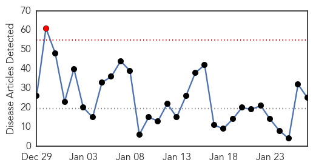
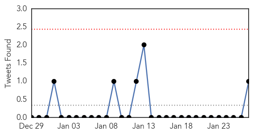
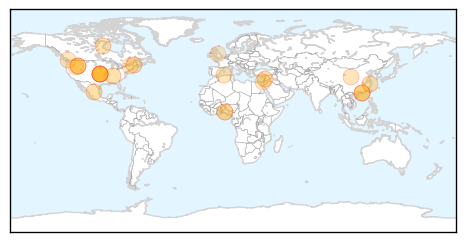
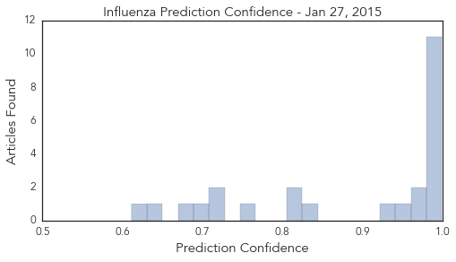

Cholera
30-Day Web Trend
6 alerts, 5 warnings

30-Day Twitter Trend
0 alerts, 0 warnings

Article Locations

Article Confidences

Top Articles:
- 0.991
- Sahara Reporters
- 0.986
- Judge dismisses UN, Haiti cholera lawsuit
- 0.962
- Cholera outbreak in Bayelsa: Death toll hits 30
- 0.937
- Clean Water and Strong Institutions for Haiti
- 0.895
- 8 die in Anambra, 20 in Bayelsa
- 0.690
- More Flooding Expected in Stricken as Red Cross Appeals for Millions in Emergency Funding
- 0.637
- Malawi hit by catastrophic floods; emergency aid on its way
- 0.544
- Lawyers push lawsuit against UN for Haiti cholera outbreak
Top Tweets:
-
No tweets found for Jan 27, 2015
Influenza
30-Day Web Trend
1 alerts, 0 warnings

30-Day Twitter Trend
0 alerts, 0 warnings

Article Locations
Article Confidences
Top Articles:
- 1.000
- Flu cases double to 2,372 in El Paso, health officials say
- 0.999
- DHMC Units Beset By Flu
- 0.997
- Santa Clara County records first flu death, patient under 65
- 0.997
- Santa Clara County's first flu death of season
- 0.997
- Coeur d'Alene Press: Local News
- 0.995
- 16 Die of Flu-related Diseases Statewide, None in Magic Valley
- 0.992
- First Case of Human Bird Flu in North America Confirmed, a Second Possible
- 0.992
- Ethicist Wants Mandatory Flu Shots for Health Workers
- 0.988
- UN Warns of Bird Flu Increase in China
- 0.987
- Human infection with avian influenza A(H7N9) virus – China
- 0.985
- Gaping holes exist in Maine's readiness for a public health emergency
- 0.973
- Schools Get A Day Out For Snow, But Not Likely For Influenza
- 0.970
- CHP closely monitors first human case of avian influenza A(H7N9) in Canada
- 0.956
- H7N9 Avian Flu Virus Enters Canada, B.C. Woman Who Travelled To China Tests Positive
- 0.932
- Flu Scan for Jan 27, 2015
- 0.832
- Seasonal influenza: 13 deaths since the beginning of January
- 0.811
- Canada Confirms First Case of H7N9 Bird Flu in North America
- 0.810
- Canada has its first case of Avian flu
- 0.766
- North America has 1st case of H7N9 bird flu
- 0.726
- Avian Influenza Outbreak Confirmed In Ogun
- 0.722
- Nigeria, Israel, West Bank fight avian flu in poultry
- 0.695
- Ogun Government Confirms Bird Flu In Ota, Sagamu, Others
- 0.675
- TB case confirmed in Vermont school worker
- 0.631
- Agencies Scramble to Contain Bird Flu
- 0.611
- Canada reports first H7N9 case
Top Tweets:
- 0.511
- RT: Dr Chan: Currently we face threats from MERS, new strains of avian influenza, human cases H5N1, H7N9 w/ high fatality rate EB…